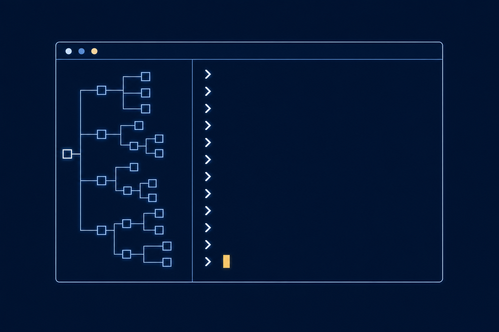
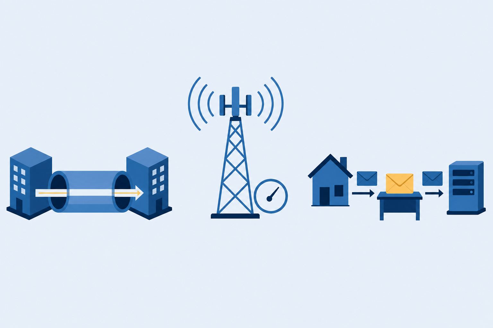
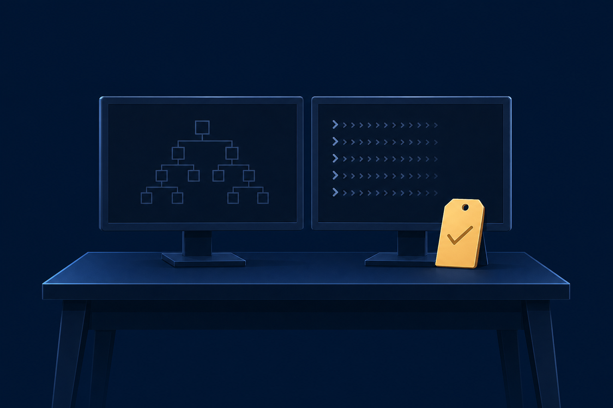

01
Manage
hardware, disks, tasks, and accounts with the Windows management consoles.

Management consoles, command-line tools, and the network settings that finish the job. This chapter runs Windows from both sides.
Start here: When Windows misbehaves, do you reach for a window or type a command? What would make you switch?
hardware, disks, tasks, and accounts with the Windows management consoles.
the same facts at the command line, from diskpart to sfc.
PC-207 to the network with the right profile, firewall rule, and route.
One front-office workstation rides the whole class. It runs slow, it gets a new drive, and it needs the network. Every tool today touches this machine.
Consoles first. The prompt confirms later.
A console is a container for snap-ins. Build a custom MMC and every tool your job needs lives in one window.
Disabled, the device stops hurting performance. First win for PC-207.
Change your mind later? Repartition. The console handles HDD, SSD, and optical drives, fixed or removable.
The source guidance sets the order: Clean-up first, then Defragment and Optimize.
With a partner: Does the tool shuffle data into contiguous clusters, or something else? Why does the answer depend on the drive type?
An interval or an event fires.
Updates, backups, synchronizing data.
PC-207 · nightly backupEvery run recorded. Failures leave a trail you can troubleshoot.
Automation you cannot audit is a mystery. The log turns a failed task into a readable story.
commandWhat to run/switchesHow it runsargumentsWhat it acts on:: two ways to open the manual C:\> command /? C:\> help command
C:\Users> cd .. :: up one level C:\> dir :: list what lives here C:\> D: :: jump to another drive D:\> cd \ :: back to the root
Three switch families ride on dir. Run dir /? and read what each letter does.
C:\> diskpart DISKPART> select disk 1 DISKPART> detail disk :: what the console showed DISKPART> select partition 1 DISKPART> extend :: grow into unallocated space DISKPART> exit
With a partner: Read the command aloud as a sentence before you peek. What do /r and /t add?
C:\> winver :: which Windows is this C:\> whoami :: who is signed in C:\> sfc :: System File Checker, repairs system files
Version, user, file health: three answers before you theorize about anything.
PC-207 takes the wired jack. The manual SSID path covers networks that stay hidden.
DHCP fills the four facts for you. Static means you type them, and you own the typos.
Not discoverable. Sharing disabled.
unknown networksDiscoverable. File and printer sharing on.
trusted networksEnterprise networks. Group policy manages the firewall.
managed for youWindows Defender Firewall enforces the profile unless a third-party firewall takes over. Allow or block a program in Windows Security Center.
With a partner: Pick the profile, then name what the wrong pick would break.

A failing device drags PC-207 down. Which console and which action stop it?
Which diskpart command grows a partition into unallocated space?
Café Wi-Fi against the office LAN: which network profile fits each?

Next step: Complete the Lesson Review questions and the module quiz in Canvas, then run the CertMaster labs: Disk Management, Users and Groups, and Manage Files and Folders. Chapter 14 takes over when Windows breaks: troubleshooting and remote access.